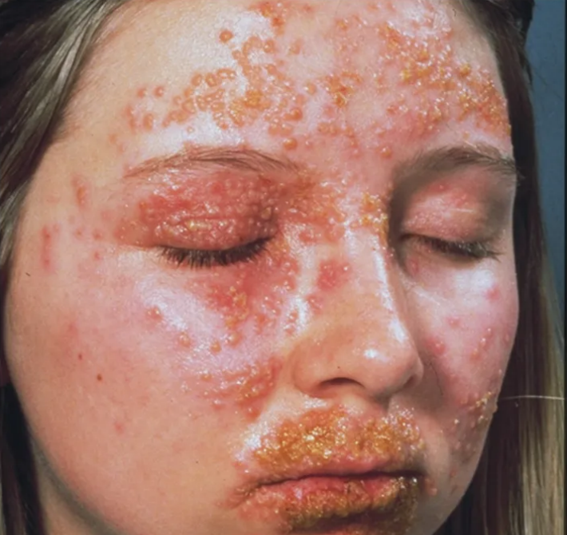

Fall 01 · Plaque-Psoriasis
Ein strukturierter Fall zur Einordnung erythematosquamöser Plaques, Differenzialdiagnostik, Therapie und Langzeitmanagement.
Fall starten →Zum Proof of Concept sind zwei ausführliche Demo-Fälle angelegt. Weitere Fälle können nach demselben Template ergänzt werden.
Ein strukturierter Fall zur Einordnung erythematosquamöser Plaques, Differenzialdiagnostik, Therapie und Langzeitmanagement.
Fall starten →
Ein notfallnaher Fall zu klinischer Priorisierung, Akutmanagement, Laborbewertung und Verlaufskontrolle.
Fall starten →Das Template ist modular und kann unkompliziert um zusätzliche Fälle, Lernpfade und Fachbereiche erweitert werden.
Mehr erfahren